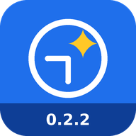
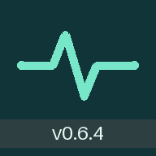

kaji apps
Every Android app built so far. All APKs are experimental test builds; check the SHA-256 after downloading. Status as of 2026-11-17 17:00 WIB. Superseded older builds are not linked.
Available now
itdapk 0.5.12
Home-screen widget and app for reminders and todo lists, with shared lists over Delta Chat. Experimental build.
SHA-256 b273695e23797d8e50c59f4ca12000df168134aebef315492f0eead0dfae0207kemas 0.2.2
Cleaning accountability app. Version 0.2.2 corrects the bottom input/Add-button overlap with the Android navigation area. Experimental; no device-runtime test is claimed.
SHA-256 419150a622be9ea0661bc51f903a368ae3dce33afff8c7c165af10ab25a48b48cabang 0.3.1
Threaded, collapsible view for Delta Chat conversations.
SHA-256 1f8632bfa6217a23080d5909fe220391518dafc6a15b372e92ecd064e87f5180
menit 0.1.1
Estimates how much phone time goes to AI apps.
SHA-256 7666479353644348a828e672aa4ade9a49e3e151df6a2a8d6bc1190d688acf53jin 0.4.15
Phone-side Delta Chat bot runtime, built as a standalone validation app. The runtime now ships inside itdapk.
SHA-256 11a941fec4420a35ed1a2c4d8e0f495e134c4212ad40e4cdd61b576e5fc73158fae 1.1.1
Pushes a ZIP file to a GitHub repository using git over SSH.
SHA-256 f2a920f68093cbf3892b133393d9046db830e58d903ae033684fe58c04ad9ec1sapa 0.5.7
Helper for event moderators: counts people on camera, counts raised hands per question round and picks a random person.
SHA-256 7b9406125c1d6cfdb4c781f5f582f0d0907a282b819327e7b122e1a0c65a7450onda 0.2.1
On-device sensors and small-model demos for Android, built for an Edge AI talk.
SHA-256 6a77d3677e996a24f124a0d6af2be50ac45e3f43fc52cda84de25aa7e072ead2bidik 0.1.0
Prototype; account creation is optional and user-triggered. Live account creation, pairing and send-back are not verified on a real phone. After pairing, launches may attempt sync and send without a per-run prompt.
SHA-256 2a1dd3798bf311a5998b7e76d4a411f94191f68d671c85203966889030f0f903
denyut 0.6.4
Notes and reminders can work offline without a model. Local-model loading is disabled in this build; no model was loaded and no chat account was provisioned for qualification.
SHA-256 9769b48894996a91bc4c74587ab742bafa58bcb99c7f2415bdeeb1b8db889d2dsaku 0.1.0
Synthetic entries only. Not for real passwords, accounts or keys; no real vault, network, sync or Autofill. Development checkpoint; license selection is pending. Full suite: 13 tests, one known failure, KdbxSpikeTest.readsPykeepassRoundtrip.
SHA-256 dfae984969d5b73eaaaa242ea3b561a95d2ea4324268439b7792b3f72d7c861c